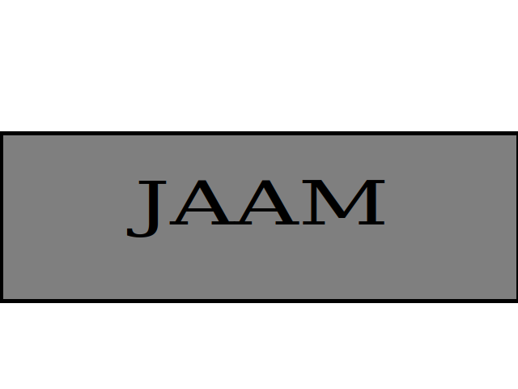

Hoja de Vida
John Alexander Aguirre Marín
11 junio 1988, Medellín - Colombia
Información persona
Perfil:
- Tester certificado en ISTQB.
- Capacitado para entender e interpretar las necesidades de un cliente referente a software.
- Me adapto fácilmente a los cambios y nuevos métodos de trabajo.
- Me gusta investigar y compartir el conocimiento adquirido para obtener mejores resultados del equipo.
- Soy innovador y siempre busco obtener el mejor resultado en las actividades o procesos que realizo.